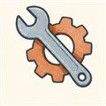
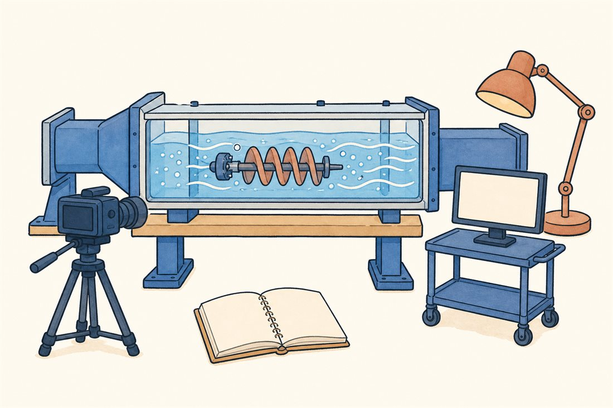
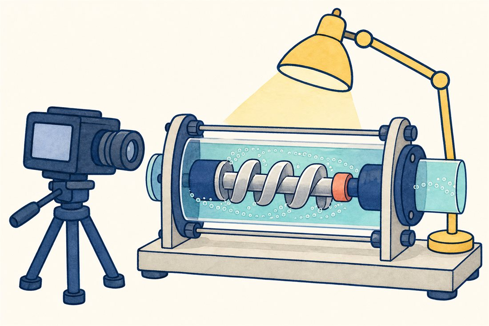
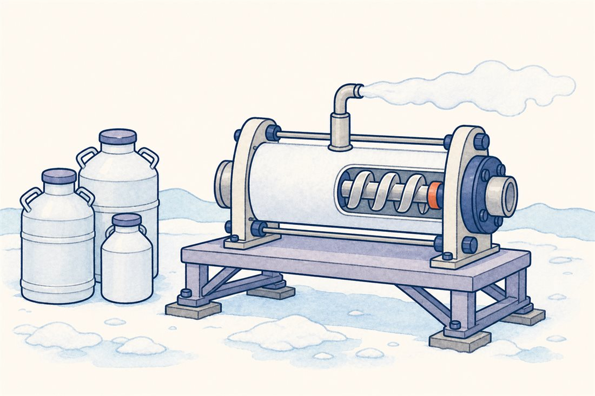
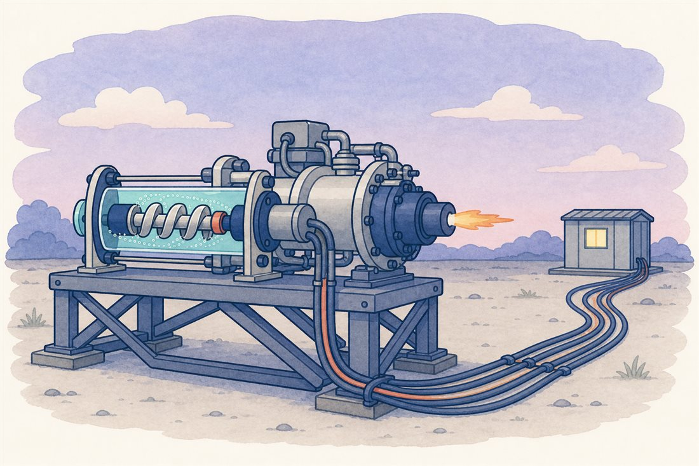

第3巻 だい8わ ── 試験の章つくって、ためす
設計の話を7話してきました。最終話のカタログの前に、その設計が現実の金属になり、証明される工程を見ておきましょう。ターボポンプ開発の合言葉は「解析を信じ、試験で確かめる」。そして極低温の実流体でいきなり試すのは高くつくので、試験には賢い階段があります——水で見て、窒素で冷やして、最後に本物の火で。

試験の階段を、3段で切り替えてみてください。



よりみち角田の水槽 — 泡を「見る」場所
キャビテーションは音と振動で「聞く」ことはできても、金属のポンプの中では見えません。だから開発の主力は水槽（キャビテーション・トンネル）——透明な試験部の中でインデューサを回し、高速度カメラで泡の生き死にを直接観察します。JAXA角田宇宙センターはこの分野の名門で、回転するインデューサ上のキャビテーションを極低温流体でも可視化する世界初の設備を築きました。第2話の旋回キャビテーションの発見と理論（Kamijo、Tsujimoto）も、この「見る」文化の系譜です。読者のあなたにとっては、いちばん近い聖地かもしれません。
よりみち3Dプリンタは、ポンプをどこまで変えるか
製造側の新しい波が積層造形（AM）です。NASAはマーシャル宇宙飛行センターで主要部品を3Dプリントで作ったターボポンプを組み、液体メタンを流す全力試験まで実施しました（2015〜16年。ページ末尾の写真がその現場です）——部品点数を大幅に減らし、鋳型なしで複雑な流路を作れることを実証した記念碑です。日本では、LE-9でAMが適用されているのは公開資料では噴射器頭部など燃焼系部品で、ターボポンプ本体については、IHIはオープンインペラやブリスク、ハイブリッド軸受といった機械加工側の技術でコストを削っています。どこにAMを使い、どこに使わないか——その線引き自体が、いまいちばん動いている設計判断です。
 流体屋のためのノート
流体屋のためのノート
水試験が成立する根拠は相似則——無次元（流量係数・揚程係数・キャビテーション数σ）を合わせれば、水の結果を実流体へ持ち込めます。ただし持ち込めない項がある: 第2話の熱力学的効果は水では弱く極低温では強いので、水槽のσは実機より辛口の評価になることが多い（ただし「常に安全側」とまでは言えず、不安定現象の種類によっては水と実流体で出方が違う例も報告されています）。液体窒素試験はその橋渡しで、Yamadaらは1985年に毎分16,500回転のLN2インデューサ試験を報告しています。LE-9のポンプも角田で実流体のコールドフロー試験（ポンプは液水/液酸、タービンは高圧水素ガス駆動）を経てからエンジン燃焼試験へ進みました。計測の主役は振動スペクトル（第6話の聴診器）と圧力脈動、そして回転バランスと過回転（オーバースピン）の構造証明——「回る前に、回りすぎても壊れないことを示す」のが回転機械の礼儀です。
・角田の極低温インデューサ可視化: ASME J. Fluids Eng.（2021）／LN2インデューサ試験: Yamada et al. (1985)
・NASA 3Dプリントターボポンプ試験: NASA/MSFC（2015-16, 画像ID MSFC-1600485）
・LE-9のAM適用（噴射器頭部）: MHI技報53-4／LE-9ポンプのコールドフロー試験: IHI技報 Vol.58 No.2